Exponential Functions and Logarithms¶
The above title sounds really boring, so I find myself wonder how you ended up reading this thing. The mathematician inside may might find this stuff interesting though.
This chapter assumes that you know derivatives.
Exponent Functions¶
So far we have seen parabolas and a bunch of other graphs. Here's a new kind of graph:
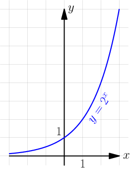
At first sight it might seem like the graph touches the  axis with
some small , but that's not the case. It gets closer and closer to
the axis all the time, although it never touches:
axis with
some small , but that's not the case. It gets closer and closer to
the axis all the time, although it never touches:
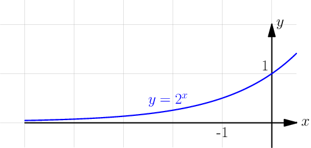
If you look at the above graph carefully you know that  at
at  because 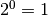, but so far we haven't talked anything about e.g. 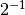.
Turns out that
because 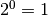, but so far we haven't talked anything about e.g. 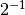.
Turns out that  . For example:
. For example:

These results agree with the graph.
The e constant¶
See Also
This video contains a more detailed
introduction to  .
.
Let's try to find the derivative of  where
where  is a constant:
is a constant:

Note that the only in what we ended up with is outside the lim, so the
entire lim thing is actually yet another constant. So, wouldn't it be handy if
the whole lim thing was just 1? Then  would be just .
would be just .
Turns out that there's only one that satisfies this, and mathematicians call
that .
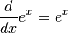
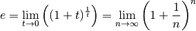
The  thing is really same as the
thing is really same as the  thing with 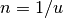. So if approaches
infinity, 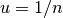 approaches 0 because dividing by a big number results in a
small number.
thing with 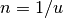. So if approaches
infinity, 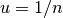 approaches 0 because dividing by a big number results in a
small number.
Let's make sure that the  thing works with the derivative thing. It doesn't
matter how and our
thing works with the derivative thing. It doesn't
matter how and our  relate to each other as long as they both to to 0, so
let's set
relate to each other as long as they both to to 0, so
let's set  and calculate the derivative:
and calculate the derivative:
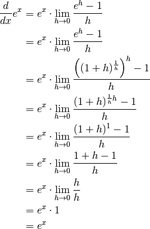
Let's also calculate an approximate value of and check the answer:
>>> n = 10000000000
>>> (1 + (1/n))**n
2.7182820532347876
>>> import math
>>> math.e
2.718281828459045
I think this is quite nice. We got this magic  number out of pretty
much nowhere. You'll be amazed by all the places where it occurs.
number out of pretty
much nowhere. You'll be amazed by all the places where it occurs.
Logarithms¶
A logarithm is the inverse of an exponent. If  , then 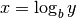. You
can also think of logarithms like
, then 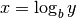. You
can also think of logarithms like  and 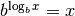. The
and 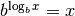. The
 is known as the base of the logarithm.
is known as the base of the logarithm.
The inversiness looks like this in graphs:
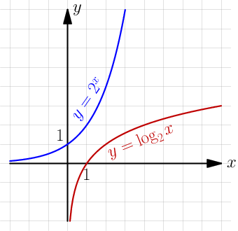
The graphs would look different if I used a different base, but you get the
idea. If we swap and  around, the blue graph goes where the red graph is
and vice versa.
around, the blue graph goes where the red graph is
and vice versa.
Note that the  graph does not exist in the
graph does not exist in the  area because
area because  with any . You cannot take any logarithm of a negative value.
with any . You cannot take any logarithm of a negative value.
The base logarithm is often written as . The n is short
for "natural", and  is called natural because it appears surprisingly
often in all kinds of places because of the .
is called natural because it appears surprisingly
often in all kinds of places because of the .
Many programming languages and calculators have a log(x) function, and
usually it returns , , or . If you aren't
sure what log(x) does, you can try it like this:
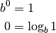
>>> import math
>>> math.log(2)
0.6931471805599453
>>> math.log(10)
2.302585092994046
>>> math.log(math.e)
1.0
Python's math.log(x) seems to return .
Now let's have a look at handy things that make logarithms actually useful. Here
, and  need to be positive, but can also be negative or zero.
need to be positive, but can also be negative or zero.